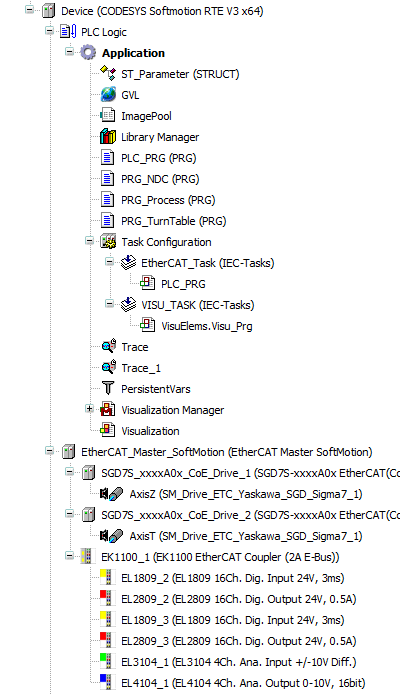
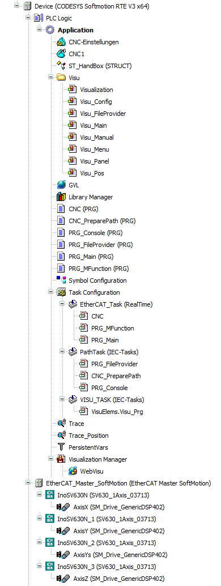

6 实战技巧
6.1 代码规范
- 变量命名带前缀以识别变量格式，例如
rTarPos:REAL;，biEmergencyStop:BOOL;等，可参阅 CoDeSys Identifiers 。 - 较多或多设备共用的变量归纳为结构体。例如
hb: ST_HANDBOX，cy: ST_CYLINDER等。 - 尽量使用标准的语法，例如
IF..THEN..ELSIF..END_IF，CASE..OF..END_CASE等。避免使用ExST，不方便移植。 - 需要映射到IO的变量直接在对应IO设备内关联，尽量不使用
AT %IX0.0的直接地址引用。批量数据除外。 - 重复变量、功能块和结构体使用
arTest: ARRAY[0..2] of ST_TEST之类的一维到三维数组，一般不建议超过二维。 - 大多数程序中都使用CASE进行分步，并做好注释。尽量避免WHILE循环。FOR循环中也需要检测最大值。
- 善用交叉引用和全局搜索功能。这方面还是TIA好，除了交叉引用还可以用#REGION带注释定位。而CODESYS的region pragma还不如缩进。
- 创建文件夹归纳Visu、POU、Struct和GVL等。
- 较长的判断逻辑可以分行，并在每一行做好注释。变量名不宜过长，变量深度一般不超过3层。
6.2 基础的visu、softmotion项目

该项目较为简单，使用了两个安川伺服轴，均使用MC_MoveAbsolute基础运动控制。使用了ImagePool嵌入背景图片和LOGO，使用PersistentVars保存参数配置。
6.3 三轴龙门CNC

6.4 多总线网关
FIXME
6.5 常见问题答疑
冗余：CODESYS支持冗余，但在冗余框架内的两台设备都需要独立的冗余授权。且EtherCAT冗余需要额外的EtherCAT专用交换机，不支持ProfiNET冗余。理论上来说EtherCAT冗余也无法做到dc不中断，可能会造成轴抖动等问题。
矩阵：矩阵功能需要单独收费。可以考虑用python、c++应用计算矩阵，再通过shm或tcp与codesys通讯。
符号通讯：符号通讯类似tia的s7协议，但相对封闭，仅对部分厂商开放。
OPC UA：标准授权内包含opc ua服务器，可以访问数据。但opc ua底层不开放，商用需授权，限制了其适用范围。
代码自动格式化：付费，由STweep Formatter for CODESYS提供。（很难想象2023年了代码格式化还需要第三方插件实现）